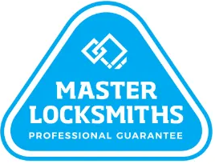
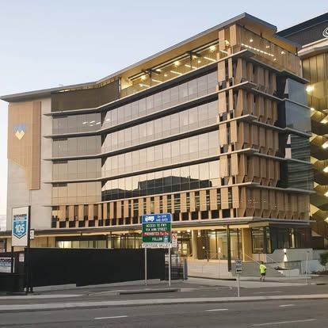
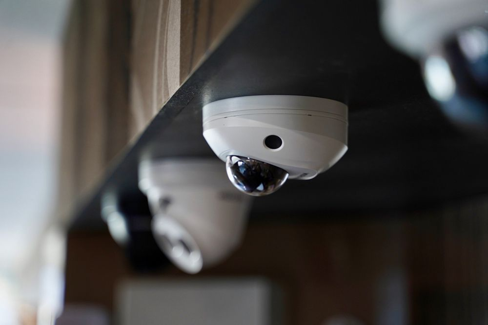
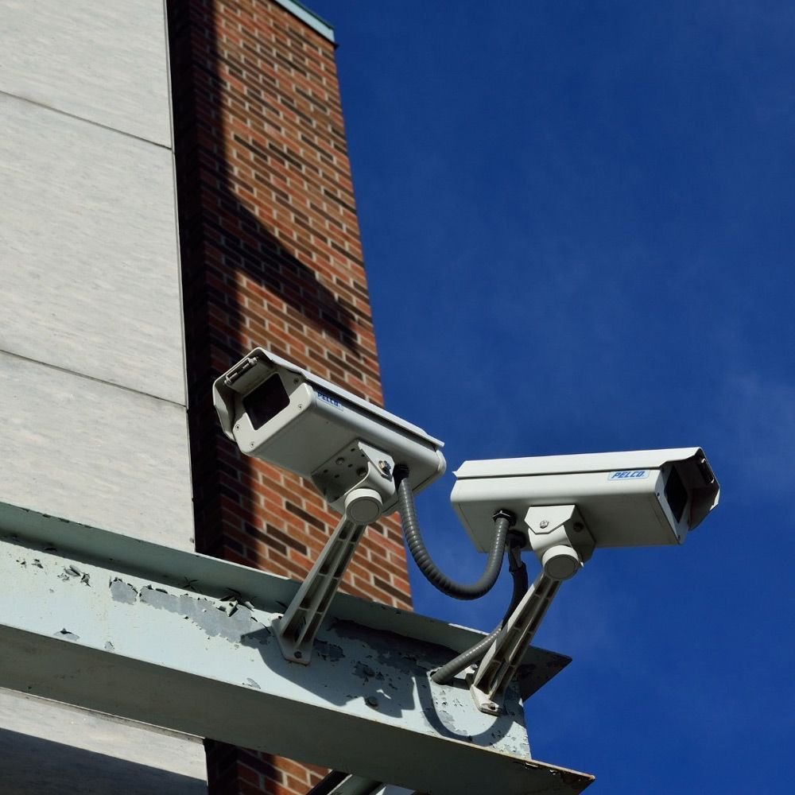

On this page
AT A GLANCE
We help businesses of all sizes secure their premises, staff and assets, with 24/7 emergency support. Northern NSW is serviced from our Ballina showroom.

Master Locksmiths Association of Australasia member 6386SPL Security Solutions is a team of Master Locksmiths providing commercial locksmith
services across the Gold Coast, Brisbane and Northern NSW.
From high-security lock installation and master key systems to electronic access control,
we help businesses of all sizes secure their premises, staff and assets, with 24/7 emergency support.
Commercial Security Solutions

At SPL Security Solutions, we understand that securing your business premises, assets, and staff is crucial. As Master Locksmiths, we provide superior commercial locksmith services, offering expertise beyond standard locksmiths. Our qualifications mean we adhere to the highest industry standards, delivering high-security lock installations, master key systems, electronic access control, and advanced surveillance solutions.
Our specialists stay ahead of evolving security technology, ensuring cutting-edge, efficient protection for businesses of all sizes—from small boutiques to large corporate facilities. With a commitment to innovation and quality, we provide tailored security solutions that safeguard your business against threats and offer peace of mind.
If your business experiences a security breach or you're proactively enhancing your security infrastructure, SPL Security Solutions is here to assist, 24/7. Call (07) 55 888 111 today—we also provide residential and automotive locksmith services throughout the Gold Coast, Brisbane and Northern NSW.
Effective Commercial Security Systems
At SPL Security Solutions, we recognise that an effective commercial security system is much more than just locks and alarms. It is a layered approach that integrates multiple components to create a secure environment.
- Firstly, a strong foundation should be set with high-quality mechanical locks that provide physical barriers to entry.
- This is typically overlaid with an access control system that ensures only authorised personnel can enter certain areas.
- Surveillance cameras can act as both a deterrent and a means to monitor premises in real time.
- Intrusion detection systems including motion sensors and security doors alert to any unauthorised access attempts, while intercom systems facilitate secure communication.
- Finally, regular maintenance and servicing ensure all components of the security system function correctly and consistently, providing businesses with continuous, reliable protection.
But that's not all! Speak to us today to learn more about our full range of commercial security solutions and how they can be tailored to your specific requirements.

Our Commercial Services

We offer a comprehensive range of security products and services for offices, developments, retail outlets and more, including:
- Lock installation
- Replacement/spare keys
- Changing & re-keying locks
- Door entry systems
- Master key systems
- Keyless entry
- Electronic access control
- Surveillance systems
- High-security locks & cylinders
- Filing cabinet locks
- Door closers
- Safe servicing & combination changes
- Keyed alike services
- and more!
Surveillance & CCTV Integration for Commercial Premises
In today’s security landscape, locks and alarms alone aren’t enough. Integrating surveillance and CCTV systems with your access control and locksmith infrastructure creates a unified security environment. At SPL Security Solutions, we offer CCTV solutions tailored for commercial buildings, covering perimeter monitoring, interior zones (such as stockrooms or server closets), and high-risk access points. Our systems feature high-definition IP cameras, night vision capabilities, and remote video access, allowing you to monitor your premises from anywhere.
We design each CCTV installation to complement your existing access control or locking architecture, ensuring smooth interoperability. For example, if an access control event triggers (such as a door opening or an alert being raised), linked cameras can automatically record or flag footage in the relevant zone. This integration ensures that any security event—whether attempted entry after hours or suspicious movement—is captured and logged for later review.
Moreover, all our surveillance offerings include appropriate storage, retention policies, and secure access to video feeds. You’ll have flexibility in how long footage is retained, which cameras are viewed in real-time versus archived, and which users have permission to access video. For a business seeking a commercial locksmith on the Gold Coast, these advanced surveillance integrations enhance the overall value and effectiveness of your security suite.

More About Our Systems & Safety Solutions for Businesses

At SPL Security Solutions, commercial security must be layered and systemic. Beyond core locksmith services, we offer a comprehensive suite of systems and safety solutions tailored to businesses of all scales. That includes electronic access control systems, keyless and biometric entry, door hardware upgrades, and fire rated door locks. Each component is selected with durability, usability, and security in mind, and our technicians ensure seamless installation and calibration.
We also support ongoing maintenance, servicing, and audits to keep your system operating reliably. Commercial security systems inevitably face wear, environmental challenges, and software/firmware updates—neglecting them can leave gaps. Our routine inspections verify the functionality of mechanical locks, electronic readers, cabling, and integrations (e.g., CCTV), and we address any vulnerabilities before they become issues.
Furthermore, all our systems are scalable. Whether you begin with locking upgrades in a small retail outlet or expand across multiple floors and offices, we plan your architecture so that future additions (locks, doors, cameras, access zones) integrate cleanly. For clients seeking a commercial locksmith in Brisbane, this forward-looking design approach ensures your investment grows with your business, not obsoletes it.
Why Choose Us?
When you engage SPL Security Solutions for your commercial locksmith and systems work, you’re choosing a team that merges master locksmith expertise with modern security systems knowledge. We have deep experience working across the Gold Coast, Brisbane, and Northern NSW, and we design solutions that reflect your unique security risks, building layout, and business operations.
Because we offer both the mechanical (locks, hardware) side and the technological (access control, CCTV, system integration) side, we eliminate the “hand off” problems common when multiple vendors are used. You deal with one provider who ensures all parts of your security ecosystem work in harmony. This integration, quality of workmanship, and commitment to tailored solutions set us apart.


How a Commercial Locksmith Supports Your Business
Alarms and surveillance get plenty of attention, but door and lock security is where business protection starts. A commercial locksmith supports you well beyond emergencies.
Commercial-grade locks
Commercial-grade locks and high-security cylinders are built to resist drilling, picking and bumping, and can be fitted to every access point, from external doors to storerooms and restricted areas.
Emergency access
A lockout, jammed lock or failed access control system can halt operations. Our 24/7 emergency service helps restore access quickly.
Master key systems
One master key opens all designated locks while other keys are limited to specific areas, ideal for multiple departments, floors or buildings.
Digital lock upgrades
Keypads, card readers, smart locks and biometric systems make access easy to manage, with codes that can be changed when staff leave and access logs that show who entered and when.
Maintenance, safes and rekeying
Routine servicing catches wear before it causes jammed doors or stuck exits. Commercial safes protect cash, files and stock. After staff turnover, rekeying makes old keys stop working without replacing the whole lock.
Tailored security advice
A site assessment identifies weak points, such as doors without closers or keys that are easy to copy, so you can plan upgrades that protect your people and operations long term.
Frequently Asked Questions
-
What does a commercial locksmith do?
A commercial locksmith works with businesses, body corporates, retail stores, offices, warehouses and other commercial sites to keep their premises secure through professional lock, key and access solutions tailored to each property. A specialist commercial locksmith on the Gold Coast or commercial locksmith in Brisbane can design and install master key systems so you can control who accesses different areas, upgrade old locks to high-security hardware, rekey existing locks after staff changes, repair doors and locks after break-ins and integrate electronic security such as access control and alarms to support your wider security strategy. They also work closely with business owners and facility managers to conduct security assessments, recommend practical improvements, and ensure your property meets insurance and safety requirements.
-
Do you offer emergency commercial locksmith services?
Yes, we provide 24/7 emergency commercial locksmith services for businesses across the Gold Coast, Brisbane and Northern NSW, with mobile technicians ready to attend your site when something goes wrong outside normal hours. If you are locked out of your workplace, have a damaged or jammed lock, need to secure your building after a break-in or urgently change locks or rekey after lost or stolen keys, an emergency commercial locksmith on the Gold Coast or commercial locksmith in Brisbane can respond quickly with fully equipped vans to restore access and secure your premises on the spot. Their emergency service is supported by a central contact number, rapid dispatch and experience in handling everything from simple lockouts to complex multi-site properties, so when you’re searching for a reliable locksmith near you in a crisis, you know help is available around the clock.
-
Do you install electronic access control systems for businesses?
Yes, in addition to traditional locks and keys, SPL Security Solutions designs and installs electronic access control systems for commercial and industrial sites, integrating them with broader security solutions where required. A commercial locksmith on the Gold Coast or commercial locksmith in Brisbane can supply and configure card readers, keypads, fobs and credential-based access, set up tiered permissions so different staff can only access authorised areas, and link access control with alarms, CCTV and other electronic security platforms to give you better visibility and control over who enters your building and when. They work with leading electronic security brands and can scale systems for single-site offices, multi-storey buildings and large facilities, making them the ideal locksmith near you if you want to modernise your business security and move away from easily lost or copied keys.
-
What types of commercial locks and hardware can you repair or replace?
A commercial locksmith can repair, rekey and replace a wide range of locks and hardware commonly found in business premises, including high-security cylinder locks, mortice locks, deadbolts, door closers, panic bars, restricted key systems, master key suites, padlocks, window locks and specialty hardware for glass doors, aluminium shopfronts and fire-rated doors. The team at SPL Security Solutions, for example, supplies and services both decorative and heavy-duty commercial door hardware. They can upgrade older locks to more secure options, replace damaged or worn components, and integrate new locks into an existing master key or restricted key system, ensuring consistent key control throughout the system. Whether you operate on the Gold Coast or in Brisbane, a commercial locksmith can work across offices, retail tenancies, warehouses, strata properties and more to keep doors operating smoothly and securely.
-
Do you provide ongoing maintenance for commercial security systems?
Yes, we support businesses with ongoing maintenance for both physical locks and electronic security systems, helping you maintain compliance, reliability, and effectiveness over time. A commercial locksmith on the Gold Coast or in Brisbane can schedule routine inspections of your locks, master key systems, door hardware, safes and restricted keys, as well as service electronic access control, alarms and CCTV in partnership with their electronic security technicians, ensuring early detection of faults before they become security risks. They can also review your site after staff changes, tenancy changes or incidents, update access permissions, rekey locks where necessary and recommend upgrades as technology and standards evolve, so you always have a dependable locksmith who understands your site and provides proactive, not just reactive, commercial security support.
Service Areas
SPL Security Gold Coast
The Gold Coast is serviced from our Bundall office.
Gold Coast showroomSPL Security Brisbane
Brisbane is serviced from our Gold Coast office.
Gold Coast showroomSPL Security Northern NSW
Northern NSW is serviced from our Ballina showroom.
Ballina showroom